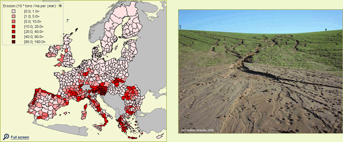
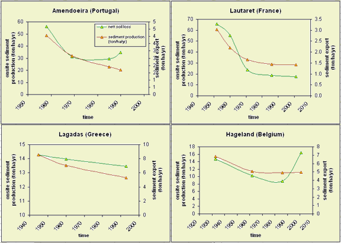

Highlights
Two counteracting processes affect dynamics in soil erosion by water: on the
one hand declines in agricultural land lead to a reduction of soil erosion,
on the other hand climate change leads to an increase in soil erosion.
In most scenarios the erosion-mitigating effects of land abandonment are
compensating the negative effects of increased and more erratic rainfall, so
that a net decrease in soil erosion in Europe is the result for all scenarios.
The absolute decrease is particularly strong in the EU15 member states, where
erosion rates are currently still quite high. The relative decrease is strongest
in the EU10, but here erosion rates are already low due to the intrinsic low
erosion-proneness of Poland and the Baltic States.

Figure 1 - Soil erosion in 2030 in the Continental
Market scenario. Erosion is highest in the darkest red regions.
Past developments
To a large extent, soil erosion has determined the way Europe looks. The marginality
of soils in the Mediterranean basin, resulting from severe erosion in ancient and
medieval times, has put a strong footprint on this area. Even when correcting for the
periodical water deficit in these semi-arid areas, the reduced water holding and
infiltration capacity of the eroded soils significantly contribute to the low
productivity of agriculture. In northern Europe, erosion has also been severe, but
the effects have been less pronounced due to the deeper soils. Iceland forms an
important exception, and has often been mentioned as an example of a society that has
been strongly hindered by the negative effects of soil erosion.
Within shorter timescales, and in more recent times, erosion has been subject
to a declining trend due to favorable land use changes. In Figure 2, erosion
in four erosion-prone areas in Europe over the last 50 years is shown. In general,
a decrease in agriculture in marginal, erosion-prone areas causes the overall
decline.
At the same time, other processes, related to land use intensification, have
played a conversed role: increasing parcel size, deeper and faster plowing,
multiple harvests per year have all lead to increasing soil erosion. Moreover,
climate change has not affected erosion trends of the past, which shows to become
increasingly important in the future.

Figure 2 - historic patters of soil erosion for four
EU regions
Future developments
Scenarios that show a strong decline in agriculture, generally also show the largest
decrease in soil erosion. The effect of climate change differs per region. In the Alps
an increased erosivity is foreseen whereas in Southern Europe a decrease in rainfall
erosivity is foreseen. In the Continental Market scenario the decrease in erosion is smallest
because of a relatively small decrease in erosivity in the Mediterranean zone on the one hand,
and the limited land abandonment on the other hand. In the scenarios Regional Communities and
Global Cooperation the reduction in erosion is strongest, which is due to land abandonment
(particularly in B1) and due to a reduction of rainfall erosivity in the Mediterranean area
(particularly in B2).
Table 1 - Change in soil erosion for 2030 relative to the year 2000 for the four scenarios
| 2000 | A1 | A2 | B1 | B2 | |
| Bulgaria & Romania | 0.34 | -33% | -18% | -33% | -33% |
| EU10 | 0.05 | -48% | -26% | -26% | -26% |
| EU15 | 1.03 | -28% | -13% | -30% | -30% |
Policy effects
The support of (liquid) biofuel production in Europe leads to higher erosion rates,
as the cultivated (i.e. ploughed) area increases (table x). The difference between
medium and high biofuel ambition only affects the EU15 countries, whereas the
difference between low and medium ambition affects the entire EU.
Also the stimulation of agricultural practices in mountainous areas, by means of the Less Favoured Areas scheme, enhances soil erosion (table x), but this effect is quite small, compared to the effect of the biofuel production aims. Maintaining or (partly) abolishing the Common Agricultural Policy has some effect on soil erosion, as it controls to an important extent the degree of land abandonment.
Table 2 - Soil erosion in the year 2030 (in 10 * Tons / ha per year) for A1 Scenario with varying degrees of Biofuel production stimulation.
| Low Ambition | Medium Ambition | High Ambition | |
| Bulgaria & Romania | 0.22 | 0.23 | 0.23 |
| EU10 | 0.02 | 0.04 | 0.04 |
| EU15 | 0.75 | 0.77 | 0.79 |
Table 3 - Soil erosion in the year 2030 (in 10 * Tons / ha per year) for B1 Scenario with varying degrees of Less Favoured Area stimulation.
| Current LFA policy | Reduced LFA subsidies | LFA subsidies abolished | |
| Bulgaria & Romania | 0.22 | 0.22 | 0.22 |
| EU10 | 0.04 | 0.03 | 0.04 |
| EU15 | 0.72 | 0.72 | 0.72 |